MusicXML 4.0
Introduction
Tutorial
"Hello World"
File Structure
MIDI-Compatible Part
Notation Basics
Chord Symbols
Tablature
Percussion
Compressed .MXL Files
Code Generation
MusicXML Reference
Elements
Data Types
Examples
Container Reference
Elements
Examples
Opus Reference
Elements
Data Types
Examples
Sounds Reference
Elements
Data Types
Examples
File Listings
musicxml.xsd
xlink.xsd
xml.xsd
container.xsd
opus.xsd
sounds.xsd
sounds.xml
catalog.xml
to31.xsl
to30.xsl
to20.xsl
to11.xsl
to10.xsl
parttime.xsl
timepart.xsl
Version History
Version 4.0
Version 3.1
Version 3.0
Version 2.0
Version 1.1
Version 1.0
MusicXML 4.0
>
MusicXML reference
> Examples
MusicXML example documents
<accent>
<accidental-mark> (Notation)
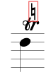
<accidental-mark> (Ornament)
<accidental>
<accordion-high>
<accordion-low>
<accordion-middle>
<accordion-registration>
<alter> (Microtones)
<alter> (Semitones)
<arpeggiate>
<arrow>
<arrowhead>
<articulations>
<artificial>
<assess> and <player>
<attributes>
<backup>
<barline>
<barre>
<bass-alter>
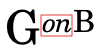
<bass-separator>
<bass-step>
<beam>
<beat-repeat>
<beat-type>
<beat-unit-dot>
<beat-unit-tied>
<beat-unit>
<beater>
<beats>
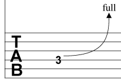
<bend>
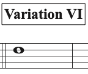
<bookmark>
<bracket>
<brass-bend>
<breath-mark>
<caesura>
<cancel>
<capo>
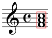
<chord>
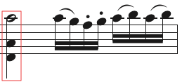
<chord> (Multiple Stop)
<circular-arrow>
<coda>
<concert-score> and <for-part>
<credit-image>
<credit-symbol>
<credit>
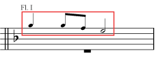
<cue>
<damp-all>
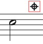
<damp>
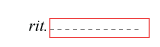
<dashes>
<defaults>
<degree-alter>
<degree-type>
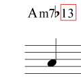
<degree-value>
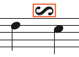
<delayed-inverted-turn>
<delayed-turn>
<detached-legato>
<divisions> and <duration>
<doit>
<dot>
<double-tongue>
<double>
<down-bow>
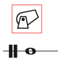
<effect>
<elision>
<end-line>
<end-paragraph>
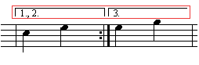
<ending>
<ensemble>
<except-voice>
<extend> (Figured Bass)
<extend> (Lyric)
<eyeglasses>
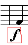
<f>
<falloff>
<fermata>
<ff>
<fff>
<ffff>
<fffff>
<ffffff>
<figure-number>
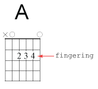
<fingering> (Frame)
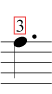
<fingering> (Notation)
<fingernails>
<flip>
<footnote>
<forward>
<fp>
<fret> (Frame)
<fz>
<glass>
<glissando> (Multiple)
<glissando> (Single)
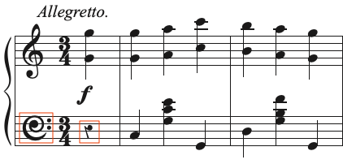
<glyph>
<golpe>
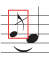
<grace>
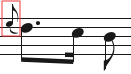
<grace> (Appoggiatura)
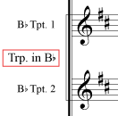
<group-abbreviation-display>
<group-abbreviation>
<group-barline>
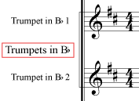
<group-name-display>
<group-time>
<grouping>
<half-muted>
<handbell>
<harmon-mute>
<harp-pedals>
<haydn>
<heel>
<heel> and <toe> substitution
<hole-type>
<hole>
<humming>
<identification>
<image>
<instrument-change>
<instrument-link>
<interchangeable>
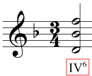
<inversion>
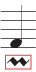
<inverted-mordent>
<inverted-turn>
<inverted-vertical-turn>
<ipa>
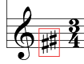
<key-octave>
<key> (Non-Traditional)
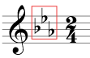
<key> (Traditional)
<kind>
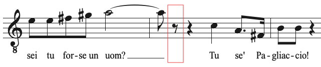
<laughing>
<level>
<line-detail>
<line>
<link>
<lyric>
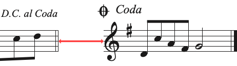
<measure-distance>
<measure-numbering>
<measure-repeat>
<membrane>
<metal>
<metronome-arrows>
<metronome-note>
<metronome-tied>
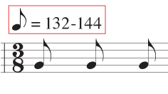
<metronome>
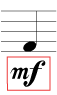
<mf>
<midi-device>
<midi-instrument>
<midi-name> and <midi-bank>
<midi-unpitched>
<mordent>
<movement-number> and <movement-title>
<mp>
<multiple-rest>
<n>
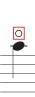
<natural>
<non-arpeggiate>
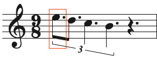
<normal-dot>
<notehead-text>
<numeral-alter>
<numeral-key>
<numeral-root>
<octave-change>
<octave-shift>
<octave>
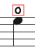
<open-string>
<open>
<p>
<pan> and <elevation>
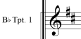
<part-abbreviation-display>
<part-link>
<part-name-display>
<part-symbol>
<pedal> (Lines)
<pedal> (Symbols)
<per-minute>
<pf>
<pitch>
<pitched>
<plop>
<pluck>
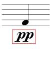
<pp>
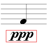
<ppp>
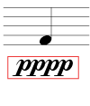
<pppp>
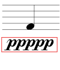
<ppppp>
<pppppp>
<pre-bend>
<prefix>
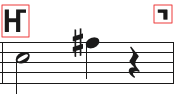
<principal-voice>
<rehearsal>
<release>
<repeat>
<rest>
<rf>
<rfz>
<root-alter>
<root-step>
<schleifer>
<scoop>
<scordatura>
<score-timewise>
<segno>
<semi-pitched>
<senza-misura>
<sf>
<sffz>
<sfp>
<sfpp>
<sfz>
<sfzp>
<shake>
<slash-type> and <slash-dot>
<slash>
<slide>
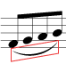
<slur>
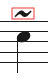
<smear>
<snap-pizzicato>
<soft-accent>
<spiccato>
<staccatissimo>
<staccato>
<staff-distance>
<staff-divide>
<staff-lines>
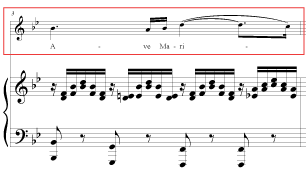
<staff-size>
<staff-tuning>
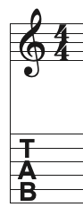
<staff-type>
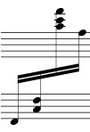
<staff>
<staves>
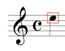
<step>
<stick-location>
<stick>
<stopped>
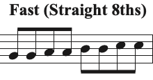
<straight>
<stress>
<string-mute> (Off)
<string-mute> (On)
<strong-accent>
<suffix>
<supports>
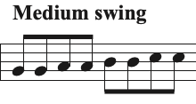
<swing>
<syllabic>
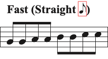
<symbol>
<sync>
<system-distance>
<system-dividers>
<tap>
<technical> (Tablature)
<tenuto>
<thumb-position>
<tied>
<time-modification>
<timpani>
<toe>
<transpose>
<tremolo> (Double)
<tremolo> (Single)
<trill-mark>
<triple-tongue>
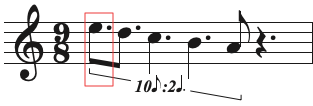
<tuplet-dot>
<tuplet> (Nested)
<tuplet> (Regular)
<turn>
<unpitched>
<unstress>
<up-bow>
<vertical-turn>
<virtual-instrument>
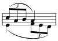
<voice>
<wait>
<wavy-line>
<wedge>
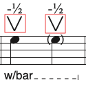
<with-bar>
<wood>
<work>
Alto Clef
Baritone C Clef
Baritone F Clef
Bass Clef
Bass Clef (Down Octave)
Mezzo Soprano Clef
Percussion Clef
Soprano Clef
system attribute (also-top)
system attribute (only-top)
TAB Clef
Tenor Clef
Treble Clef
Tutorial: Après un rêve
Tutorial: Chopin Prelude
Tutorial: Chord Symbols
Tutorial: Hello, World
Tutorial: Percussion
Tutorial: Tablature
Vocal Tenor Clef